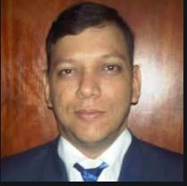

JAVIER SILVA
CONSULTOR SAP ABAP
Mas de 7 años de experiencia programando en diferentes modulos

Educacion
- Ingeniero de Sistemas
- 1999-2004 Universidad Bicentenaria de Aragua - Venezuela
- CONSULTOR SAP ABAP CERTIFICADO ID: 0010071297
- 2012 Core Consultores Barquisimeto edo. Lara- Venezuela
Experiencia Profesional
- CONSULTOR SAP ABAP ( RAWSON BPO )
- Enero 2020 hasta Abril 2020 Soporte Remoto (Cliente CAFAM). Programación en CRM Y ERP, desarrollo en los Módulos de FI, SD, FICA:
Creación y modificación de requerimientos, Reportes ALV Grids, módulos de funciones, Ampliaciones, creación de tablas,
Programación Orientado a Objetos.
- CONSULTOR SAP ABAP Remoto ( SEIDOR )
- Diciembre 2019 hasta Enero 2020 Soporte Remoto (Cliente SEIDOR). Desarrollo en el Módulo de FI, SD, MM: Creación y
modificación de requerimientos, Reportes ALV Grids, Carga Masivas, módulos de funciones, Ampliaciones, creación de tablas,
programación Orientado a Objetos, Facturación Electrónica.
- DESARROLLADOR ABAP ( GERFOR )
- Agosto 2019 hasta Noviembre 2019: Cota-Cundinamarca COLOMBIA (GERFOR) Desarrollo en el Módulo de FI, SD, MM:
Creación y modificación de requerimientos, Reportes ALV Grids, Carga Masivas, módulos de funciones, Ampliaciones,
creación de tablas, Programación Orientado a Objetos.
- CONSULTOR SAP ABAP ( FNG )
- Junio 2019 hasta Julio 2019: Bogota - COLOMBIA (Cliente FNG). Desarrollo en el Módulo de FI, SD, MM:
Creación y modificación de requerimientos, modificación de WebServices, Reportes ALV Grids, Carga Masivas, módulos
de funciones, Ampliaciones, creación de tablas, Programación Orientado a Objetos.
- CONSULTOR SAP ABAP HCM ( IBM )
- Mayo 2018 hasta Abril 2019: SOPO - COLOMBIA (Cliente Alpina). Desarrollo en el Módulo de HCM: Creación y modificación
de requerimientos, como Reportes ALV Grids, BATCH INPUTS, Carga Masivas, módulos de funciones, Ampliaciones, User Exits,
creación de tablas, Programación Orientado a Objetos, validaciones a infotipos, creación de funciones de nómina y de
tiempos.
- CONSULTOR SAP ABAP REMOTO ( CLIENTES BOLIVIA Y COLOMBIA )
- Febrero 2018 hasta Abril 2018: CONSULTOR ABAP REMOTO Programe en los siguientes Módulos FICO HR SD MM PP Soporte:
Creación y modificación de requerimientos, como Reportes ALV Grids, BATCH INPUTS, Carga Masivas, módulos de funciones,
Ampliaciones, User Exits, creación de tablas, Programación Orientado a Objetos.
- CONSULTOR SAP ABAP ( GOBERNACION DE CALI )
- Junio 2017 hasta Diciembre 2017: Cali – Colombia CONSULTOR ABAP Desarrollo en los siguientes Módulos FI SD MM Soporte:
Creación y modificación de requerimientos, como Reportes ALV Grids, BATCH INPUTS, Carga Masivas, módulos de funciones,
Ampliaciones, User Exits, creación de tablas, Programación Orientado a Objetos.
- CONSULTOR SAP ABAP REMOTO ( CLIENTES MEXICO PERU Y BOLIVIA )
- Enero 2017 hasta Mayo 2017: CONSULTOR ABAP REMOTO Programe en los siguientes Módulos FICO HR SD MM PP Soporte: Creación y
modificación de requerimientos, como Reportes ALV Grids, BATCH INPUTS, Carga Masivas, módulos de funciones, Ampliaciones,
User Exits, creación de tablas, Programación Orientado a Objetos.
- CONSULTOR SAP ABAP ( CROWDFACTORY )
- Mayo 2016 hasta Diciembre 2016: Caracas – Venezuela (Cliente La Polar) Programe en los siguientes Módulos FICO HR SD
MM PP. Proyecto de Implementación ATLAS (Pepsicola) Desde la Fase III Realización hasta Go-Live (1 Mes de Soporte):
Creación y modificación de requerimientos, como Reportes ALV Grids, BATCH INPUTS, Carga Masivas, módulos de funciones,
Ampliaciones, User Exits, creación de tablas, Programación Orientado a Objetos, Programación en CRM.
- CONSULTOR SAP ABAP ( CDUK )
- Abril 2016 hasta Julio 2016: Caracas – Venezuela CLIENTE ATENTO MEXICO Soporte Remoto. Programe en los siguientes Módulos
SD MM HR. Continuidad Operativa: Se realiza soporte remoto a los requerimientos ya desarrollado.
- CONSULTOR SAP ABAP ( SODEXO )
- Septiembre 2015 hasta Junio 2016: Caracas–México (Cliente SODEXO) Programe en los siguientes Módulos FICO HR SD MM.
Continuidad Operativa: Creación y modificación de requerimientos, como Reportes ALV Grids, BATCH INPUTS, Carga Masivas,
módulos de funciones, Ampliaciones, User Exits, creación de tablas, desarrollo de WEB SERVICES conectándolos con sistemas
externos, validaciones, sustituciones, entre otros.
- CONSULTOR SAP ABAP ( CELERITECH )
- Septiembre 2015 hasta Marzo 2016: Caracas-Venezuela (CLIENTE BANESCO) Soporte Remoto. Programe en los siguientes Módulos
FICO HR SD MM. Continuidad Operativa: Se realiza soporte remoto a los requerimientos ya desarrollado.
- CONSULTOR SAP ABAP ( E-BCORP )
- Junio 2015 hasta Agosto 2015: Caracas-Venezuela (Cliente PDVSA). Programe en el Módulo de HR.
Proyecto de Implementación SAP HR-NOMINA (Solo Fase III Realización): Desarrollo e Implementación de las aplicaciones WEB
para Gestión de Tiempo y Gestión de Viajes ambas interfaces con SAP HR-NOMINA, para RRHH de PDVSA.
- CONSULTOR SAP ABAP ( E-BCORP )
- Mayo 2015 hasta Julio 2015: Caracas-Venezuela (Cliente GRUPO FARMA). Programe en el Módulo de HR.
Proyecto de Implementación Solución Pago de Ticket de Alimentación (Solo Fase III): En este Proyecto desarrolle
Reportes ALV Grids, BATCH INPUTS, Carga Masivas, Programación en el módulo HR, modificación de infotipo 9XXX, modificaciones
de funciones de nómina y gestión de tiempo, creación de las tablas, entre otros.
- CONSULTOR SAP ABAP ( SOFTECH )
- Noviembre 2014 hasta la Mayo 2015: Caracas-Venezuela (Cliente ZURICH).Programe en los siguientes Módulos FICO HR SD MM.
Proyecto ZURICH Soporte: En este Proyecto modifique y cree varios programas, validaciones, smartforms, batch input
Reportes ALV.
- CONSULTOR SAP ABAP ( E-BCORP )
- Junio 2014 hasta Noviembre 2014: Caracas-Venezuela (Cliente CINES UNIDOS). Programe en los siguientes Módulos FICO HR SD MM.
Proyecto de Implementación Desde la Fase II BluePrint hasta la Fase III Realización: En este Proyecto trabaje por
6 meses en los cuales modifique varios smartforms, SAPScripts, Creación de Programas para Ampliación de Centros y Materiales
a través de batch input, Reportes ALV.
- CONSULTOR SAP ABAP ( E-BCORP )
- Marzo 2014 hasta Mayo 2014: Caracas-Venezuela (Cliente TELEFONICA). Programe en los siguientes Módulos FICO HR SD MM.
Proyecto TELEFONICA (Solo Fase III Realización): En este Proyecto trabaje por dos meses en los cuales elabore varios reporte Alv Grid
y algunos con eventos es decir al darle doble clic sobre una columna me muestra en otro ALV la información de acuerdo al código que yo
seleccione en esa columna.
Funciones desempeñadas:
Realización de ALV Grids, ALV con eventos, Modificación de Infotipos, Modulo HR, entre otros.
- CONSULTOR SAP ABAP ( CORE CONSULTORES )
- Noviembre 2012 hasta Marzo 2014: Barquisimeto-Venezuela (Varios Cliente).Programe en los siguientes Módulos FICO HR SD MM.
Consultor SAP certificado en el módulo de ABAP dando soporte en diferentes módulos de SAP: Materiales (MM), Ventas y Distribución (SD),
Finanzas (FI), Planificación de Producción (PP). Amplio conocimiento de diccionario de datos (tablas, estructuras, dominios, tipos de datos,
ayuda de búsqueda elemental, tablas internas), conversión y migración de datos utilizando LSMW, Reports, ALV Grids, Sap Scripts, Smartforms,
Gestión de Dynpros, Batch Inputs, enhancement, paquetes, Bapis, User Exits, Grupos y módulos de función.